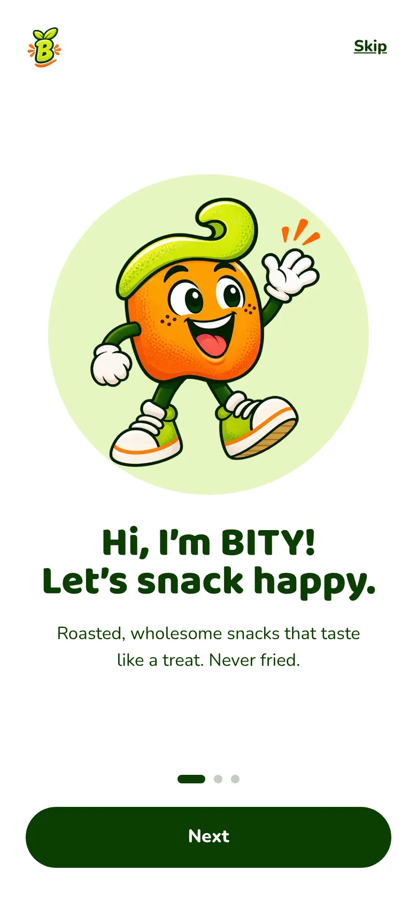
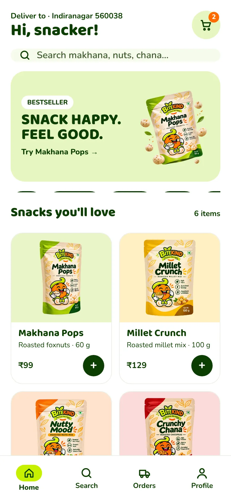
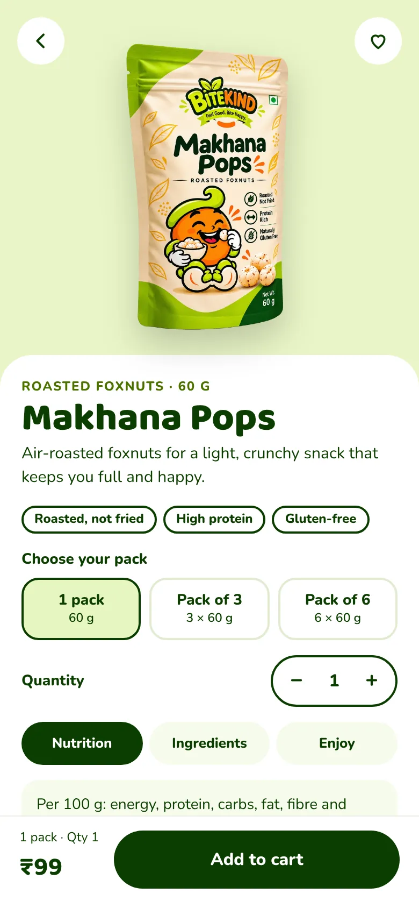
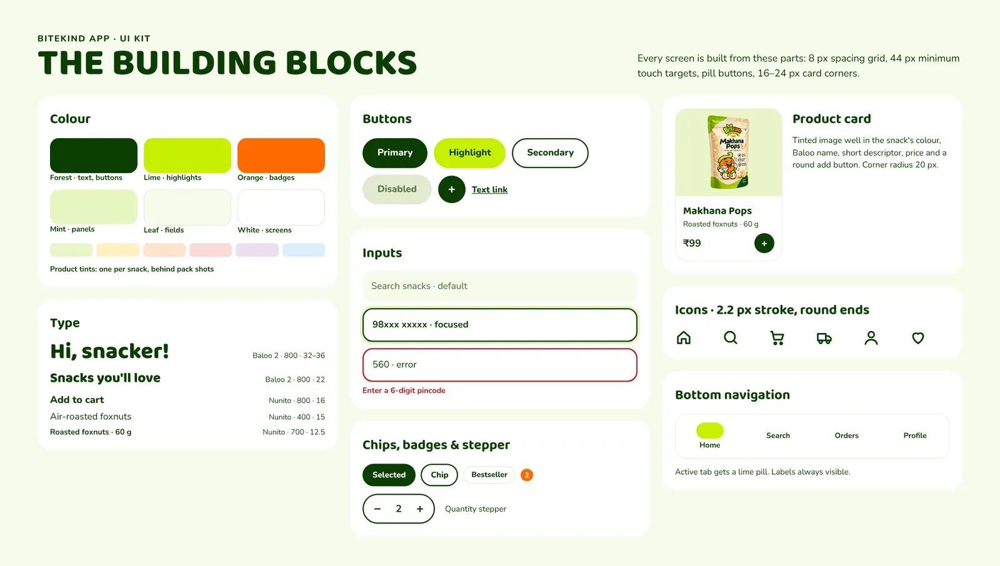
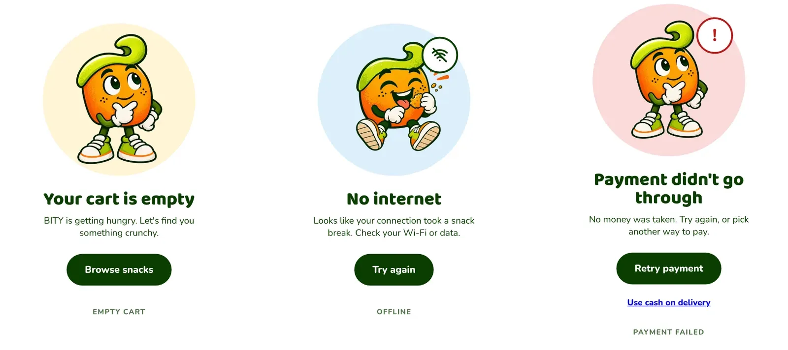

05 · User flow
From first open to snacks at the door.
The main path runs left to right. Side paths cover search and filters, and a failed payment loops back to checkout without losing the cart.

UX/UI case study · Mobile app
The Bitekind app lets people re-order healthy roasted snacks in under a minute. I designed it end to end: problem framing, users, structure, user flow, 14 screens, a UI kit and every error state.
Bitekind is a concept brand made for my portfolio. The users and research below are assumptions I designed from, not results from real customers.



01 · The problem
Wrote the problem, goals and three proto-personas.
Mapped the app into 4 tabs and drew the full user flow with error paths.
Built the UI kit from the brand, then all 14 screens on top of it.
Designed empty, offline and failed-payment states and checked accessibility.
02 · Who it's for
Proto-personas based on who buys healthy packaged snacks in Indian cities. Each one shaped a part of the app.
"At 4 pm I just want something crunchy that won't make me feel bad."
"I read every label. I need to know it's roasted and has no preservatives."
"High protein, cheap, and I want to know when it arrives."
03 · Design principles
Add to cart sits on every card. Checkout fits address, delivery and payment on one page instead of three steps.
Every card shows the snack type and weight. Product pages lead with "Roasted, not fried", "High protein" and "Gluten-free" chips.
The same flavour colour from the pouch sits behind its photo in the app, so people learn the range by colour.
The mascot greets, celebrates and explains errors, but stays out of the way while people shop.
04 · Information architecture
A short entry path, then a bottom bar with Home, Search, Orders and Profile. Cart and checkout open on top of any tab so people never lose their place.
05 · User flow
The main path runs left to right. Side paths cover search and filters, and a failed payment loops back to checkout without losing the cart.
06 · Screens
Grouped by the four moments of the journey. Numbers match the notes. Click any screen to see it large.
07 · UI kit
The kit turns the brand guidelines into app parts: colour roles, a type scale, buttons, inputs, chips, cards, icons and the bottom bar.

| Use | Font | Size |
|---|---|---|
| Hi, snacker! | Baloo 2 · 800 | 32–36 |
| Snacks you'll love | Baloo 2 · 800 | 22 |
| Add to cart | Nunito · 800 | 16 |
| Air-roasted foxnuts | Nunito · 400 | 15 |
| Roasted foxnuts · 60 g | Nunito · 700 | 12.5 |
Everything snaps to an 8 px grid.
08 · States & edge cases
Each state says what happened, reassures, and gives one clear next step.

| State | What the user sees | Next step | Why |
|---|---|---|---|
| Empty cart | "BITY is getting hungry." | Browse snacks | Turns a dead end into a path back to the shop. |
| No internet | "Your connection took a snack break." | Try again | Blames the connection, not the user, and keeps the cart. |
| Payment failed | "No money was taken." | Retry payment · or cash on delivery | Answers the scariest question first, and offers a way out. |
| No search results | Suggestions to try instead | Tap a suggestion | Keeps people searching instead of leaving. |
| Wrong pincode | Red field with "Enter a 6-digit pincode" | Fix the field | Says exactly what's wrong, right where it is. |
09 · Accessibility
Body text is Forest on white or mint. Lime is only ever used behind Forest text, never as text on white.
All buttons, chips and steppers are at least 44 px tall, with space between them so thumbs don't hit the wrong one.
Active tabs get a pill plus a label. Errors get red plus a message. Order status uses ticks, not only colour.
Bottom bar icons always have text under them, and form fields keep their label above the input.
Short sentences, no jargon. "No money was taken" instead of "Transaction declined".
Body text never drops below 15 px, and small labels use bold weights to stay sharp.
10 · What's next
5–6 people who buy packaged snacks online, on a clickable prototype.
A mascot earns its place in the moments people feel stuck. So I kept BITY out of the shopping screens and gave him the welcome, the celebration and the error states.